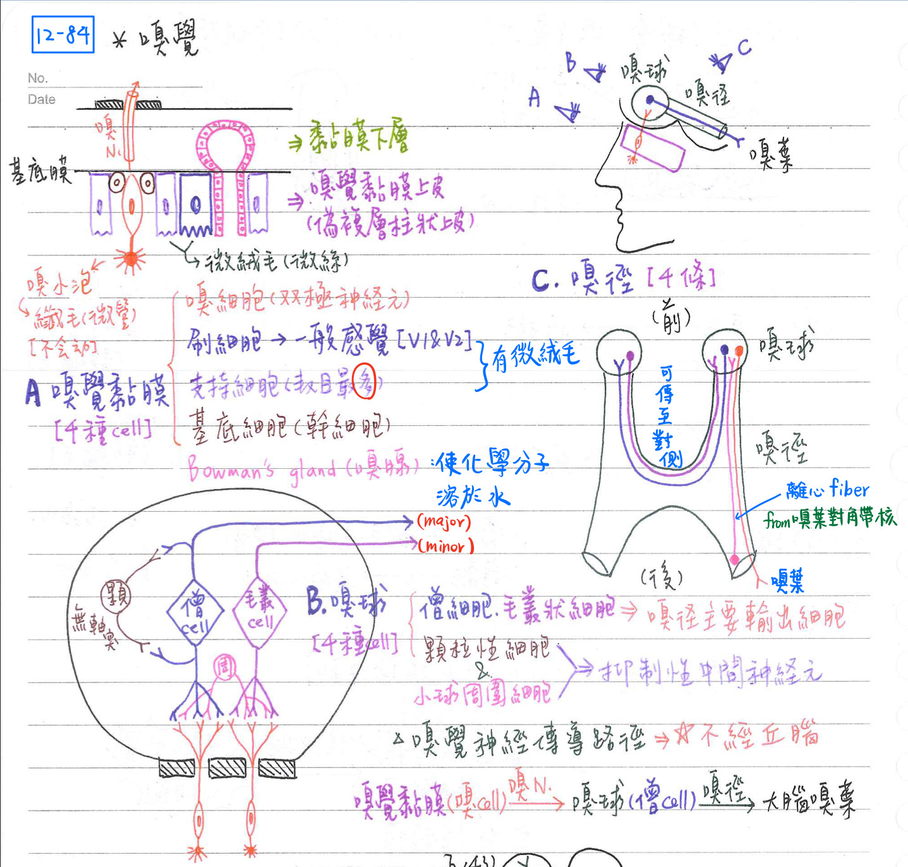

👃 特殊感覺-嗅覺[重點]
嗅覺接受器：嗅覺黏膜(olfactory mucosa)=偽複層柱狀上皮
- 嗅覺黏膜(olfactory mucosa)=偽複層柱狀上皮
- 嗅細胞(olfactory cell)：
- 雙極神經元(1軸突+1樹突)
- 頂端樹突形成嗅覺囊泡(vesicle)，其上具6~8個纖毛(cilia)
- 該纖毛不具運動性，且含氣味接受器(odorant receptor) [唯一不具運動性的纖毛]
- 底端軸突形成嗅N[無髓鞘(un-myelinated)]
- 支持細胞(sustentacular/supporting cell)：數目最多；頂端具微絨毛
- 提供機械性(mechanical)及營養性(metabolic)支持給嗅細胞
- 基底細胞(basal cell)：幹細胞
- 刷細胞(brush cell)：具微絨毛，接受一般感覺，經CN5-1, 5-2傳至中樞
- 黏膜固有層(lamina propria)：具大量血管、淋巴管、神經纖維及嗅腺(Bowman's gland)[使化學分子溶於水]
- 嗅細胞(olfactory cell)：
嗅覺神經傳導路徑
- ★[110-2]不經丘腦轉接
- 路徑：嗅覺黏膜(嗅細胞)→嗅神經→嗅球(僧細胞等)→嗅徑→大腦嗅葉
- 最快適應的特殊感覺：嗅覺
- 化學分子需溶於黏液層內方能刺激嗅細胞
- 人類約具1000種特定嗅覺接受器；但經不同組合後，可區分的氣味數目約10,000種
- 嗅球(olfactory bulb)內含：
- 僧細胞(mitral cell)：嗅徑的主要輸出細胞(major)
- 毛叢狀細胞(tufted cell)：嗅徑的次要輸出細胞(minor)
- 顆粒層細胞(granular cell)：抑制性中間神經元；無軸突
- 小球周細胞(periglomerular cell)：抑制性中間神經元
- 突觸性絲球體(synaptic glomeuli)：嗅细胞之軸突與僧細胞or毛叢狀細胞樹突形成
- 嗅徑(olfactory tract)內含：
- 嗅泡輸往大腦嗅葉之神經纖維
- 嗅泡輸往對側嗅泡之神經纖維
- 自對側嗅徑傳回嗅泡之纖維
- 自大腦嗅葉傳至嗅泡之離心(centrifugal)纖維
- 離心(centrifugal)纖維：主要來自嗅葉對角帶核(diagonal band nu.)

- ★[109-2]大腦嗅覺皮質(olfactory cortex)：
- 前嗅核anterior olfactory nu.)
- 前嗅核與嗅球互通雙側性與去回性之神經訊息
- 梨狀皮質(piriform cortex)：位鈎狀回(uncus)、島閾(limen insula)
→調控嗅覺之認知(perception)與區分(discrimination)
- 杏仁核(amygdala nuclcus)&旁杏仁核(periamygdaloid nucleus)：
→調控嗅覺與行為(behavior)之連結 - 嗅結節(olfactory tubercle)：位前裂質(anterior perforated substance)
→嗅結節調控嗅覺與情感(enotion)之連結
- 內嗅皮質(entorhinol cortex)：位旁海馬回(parahippocampal gyrus)
→內嗅皮質調控嗅覺與記憶(memory)之連結
- 前嗅核anterior olfactory nu.)
📖 書本補充：與筆記不同或筆記沒寫到的地方
⚠️
書中嗅覺的內容很少（嗅上皮、嗅球細胞等組織學細節書上沒有寫），與筆記沒有矛盾，以下只列筆記沒寫到的幾點。
嗅神經（p.477）
- 書的嗅神經資料：感覺類型＝SSA（書在 p.469 的腦神經功能分類表則把嗅覺與味覺列為 SVA，並註明有些作者把嗅覺歸在 SSA，兩種分類都可能出現）；神經元型態＝雙極；神經元位置＝鼻腔嗅覺區的嗅覺黏膜；穿過篩板上的孔。
- 路線：嗅球→嗅徑→嗅紋（olfactory striae）→終止於顳葉的梨狀皮質及杏仁核等嗅覺區；交叉：部分交叉。
- 書的提示：嗅神經與視神經的神經元都是 CNS 中少數的雙極神經元。
- 鼻腔的神經支配中，嗅神經分布在鼻中隔及外側壁的上部（p.544）。
- 嗅覺訊息經嗅徑及內、外側嗅紋直接投射到皮質，不經丘腦（p.435、p.439，與筆記一致）。
📝 書中歷屆考題（點選答案作答）
ℹ️
書中「嗅及視神經」一節沒有附考題；以下三題是書上其他章節與嗅覺有關的考題（在大腦皮質、間腦、基底核&邊緣系統頁也收錄）。
110-2-13p.435
下列何種訊息不經由丘腦 (thalamus) 投射至大腦皮質？
💡 嗅覺經嗅徑及內、外側嗅紋直接投射到皮質，不經丘腦。
111-2-4p.439
下列何者不經過丘腦 (thalamus)，直接傳入邊緣系統 (limbic system)？
💡 嗅覺直接進入梨狀皮質、杏仁體等邊緣系統成分。
109-2-16p.468
下列何構造不屬於外側嗅覺區 (lateral olfactory area)？
💡 前隔區位在透明中隔（正中線）的前方，不屬於外側嗅覺區。